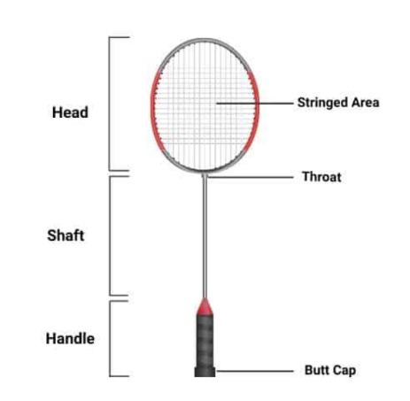
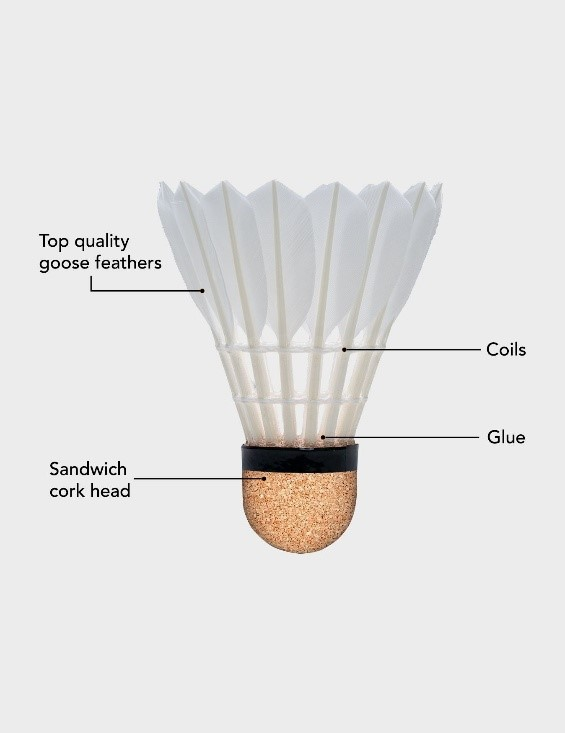
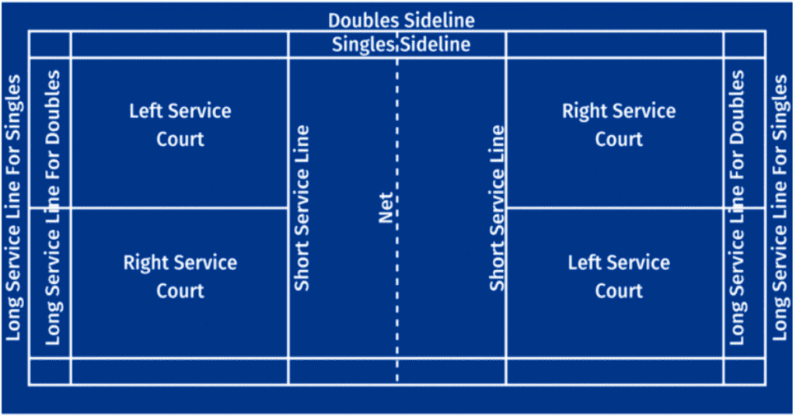
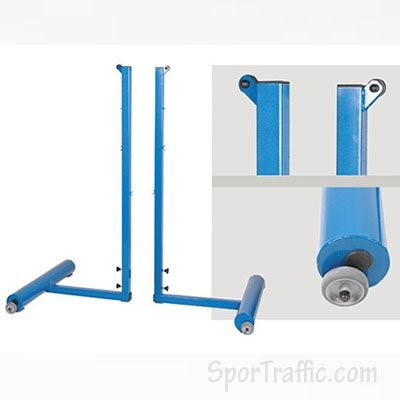
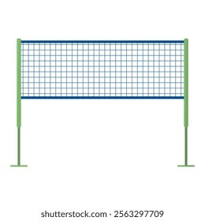
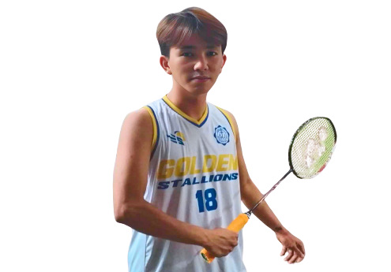

Developing Understanding
Individual and Dual Sports: Badminton
Badminton is a tennis-like game played with light stroke rackets that are used to strike
a shuttlecock (a feather cork missile) back and forth, before it hits the ground across
a high net within a rectangular court. It is also a court play that can be played either
singles or doubles, by men, women or mixed pairs, either indoors or on outdoor courts as
a fun game.
History of Badminton
Badminton originated from the ancient civilizations of Europe mainly in England. It was
brought to England about 1870 by British army officers stationed in India. Badminton is
an ancient game known as Battledore (bat or paddle) and Shuttlecock originated more than
2000 years ago. The game was learned in India as “poona”. Battledore and Shuttlecock
were simply played by two people hitting a shuttlecock backwards and forwards with a
simple bat as many times as they could without allowing it to hit the ground.
| Term |
Meaning / Note |
| Singles |
A match between two players (one vs one) |
| Doubles |
A match between two pairs (two vs two) |
| Shuttlecock |
The projectile (commonly “shuttle”) players hit back and forth |
| Racket |
The instrument players use to hit the shuttlecock |
| Court |
The playing area, including lines for singles/doubles |
| Serve / Server |
The act of putting the shuttlecock into play / the player doing it |
| Net Play |
Shots near the net (drop, net kill) |
| Clear |
A shot sending the shuttle high and deep to the back court |
| Smash |
A powerful downward shot aimed near the opponent’s court |
Facilities And Equipment

Badminton racket is quite light and can be made of wood, aluminum,
metal or synthetic
material such as graphite of carbon. A badminton racket weighs roughly 98-100 grams and
68 cm in length. Most strings are made of synthetic such as nylon but world class
players use lamb. String diameter ranges from 19-22 gauge. Most competitive players
prefer 21 to 22 gauge string at 14 to 15 pounds of tension, that provides power and
control. For school and recreational use, with 20 gauge string at a tension of 12 to 13
pounds is adequate.
The Section of the Badminton Racket:
- Stringed area - is intended to hit the shuttle.
- Head - bound the stringed area.
- Throat - (if present) connects the shaft of the head.
- Shaft - connects the handle to the head.
- Handle - is intended for a player’s grip.
- Butt - is located at the tip of the handle.
- Frame - includes head, the throat, shaft, and the handle. It is
no more than 680mm (2 ft. ¼ inches) or wider than 9 inches.

Shuttlecock
is the official name given the shuttle of bird. It is made up of 14-16 goose
feathers and is firmly in a leather-covered cork head. It weighs from 4.74–5.50 g.
Badminton Court

- Rectangular and divided into halves by a net.
- A court is marked with side lines (singles and doubles), long service lines
(single/back boundary and for doubles), short service lines, and center lines
(service) including left and right service courts.
- Measurements:
- Width for Singles - 5.18 m (17 ft.)
- Width for Doubles - 6.1 m (20 ft.)
- Full length of the court - 13.4 m (44 ft.)
- Distance of short service lines away from the net – 1.98 m (6 ft, 6 inches)
- Distance of long service lines away from back boundary lines - 0.76 m (2 ft,
6
inches)

Posts
- The post should stand 1.55m (5ft. 1in) in height from the surface of the court. They
must be placed on the double sidelines.

Net
- The height from the floor is 5ft. (1.524m) in the center and 5ft 1in (1.55m) at the
post. A measuring rod, 5ft long, should be kept by the umpire’s chair to facilitate
regular testing.
Strokes in Badminton
Forehand Stroke - all shots played on the racket right side of the body.
Applies the shake hand style.

Backhand Stroke - all shots played on non-racket left side of the body.
Applies the grip style.
Basic Rules of the Game
1. Players
- “Player” applies to all those taking part in the match.
- The game shall be played, in the case of doubles, by two players a side, or in
the case of singles, by one player a side.
- The side having the right to serve shall be called the serving side and the
opposing side shall be called the receiving side.
2. Toss
- Before commencing the play, the opposing sides shall toss a coin, spin a racket,
or toss a shuttle, to determine who shall exercise the choice in either Rule 1 or
Rule 2.
Rule 1: To serve first
Rule 2: To choose the side of the court.
3. Scoring System
The rally point system is used in scoring the badminton game which means any fault
committed by the serving or receiving team gains point.
- A match consists of the best 3 games of 21 points.
- Every time there is a serve – there is a point scored.
- The side winning a rally adds a point to its score.
- At 20 all, the side which gains a 2 point lead first, wins that game.
- At 29 all, the side scoring the 30th point, wins that game.
- The side winning a game serves first in the next game.
4. Serve / Service
Singles
- The players shall serve their Right respective court, when the server has not
score, or has scored an Even number of point in that game.
- The players shall serve their Left respective court, when the server has not
score, or has scored an Odd number of point in that game.
Doubles
- At the start of the game and each time a side gains the right to serve, the
service shall be delivered from the right service court.
- Only the receiver shall return the service; should the shuttle touch or is hit by
the receiver’s partner, the serving side scores a point.
-
- After the service is returned, the shuttle is hit by either player of the
serving side, and then by either players of the receiving side, and so on,
until the shuttle ceases to be hit in play.
- After the service is returned, the player may hit the shuttle from any
position on that player’s side of the net.
- In the first half-inning, the first team to serve is entitled for only one
service or simply called as “one down initial service.” Thereafter, the partners
will change service after they lose a rally.
- The server changes courts after every point his team wins. The receiving side
does not change courts.
- The winning team serves first in the next game. In double matches, either player
of the winning side may serve first in the next game and either player of the losing
side may be positioned in the right court to receive.
5. Service Court Errors
- A service court error is made when player:
- Has served out of turn.
- Has served from the wrong service court; or
- Standing in the wrong service court, was prepared to receive the service
and it had been delivered.
- When a service court has been made, then:
- If the error is discovered before the next service is delivered, it is a
“let” unless only one side was at fault and lost the rally, in which case
the error shall not be corrected.
- If the error is not discovered before the next service is delivered, the
error shall not be corrected.
6. Faults
- If the service is not corrected.
- If the server, in attempting to serve, misses the shuttle.
- If after passing over the net on service, the shuttle is caught in or on the net.
- If in play, the shuttle:
- Lands outside the boundaries of the court.
- Passes through or under the net.
- Fails to pass the net.
- Touches the roof, ceiling or side walls.
- Touches the person or dress of a player.
- Touches any object, or person outside the immediate surroundings of the
court.
- If the shuttle is in play, a player:
- If any player deliberately distracts an opponent by any action such as
shouting or making gestures.
- If in play, the shuttle:
- Is caught and held on the racket and then slung during the execution of a
stroke.
- Is hit twice in succession by the same player with two strokes.
- Is hit by a player and the player’s partner successively.